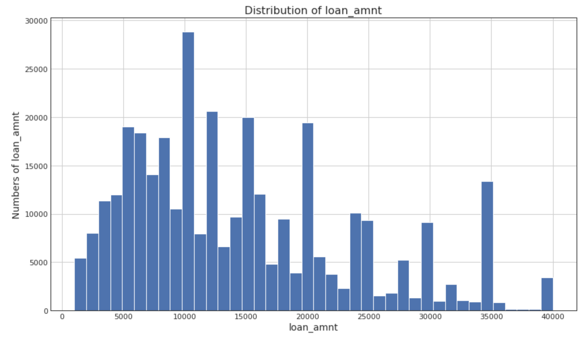
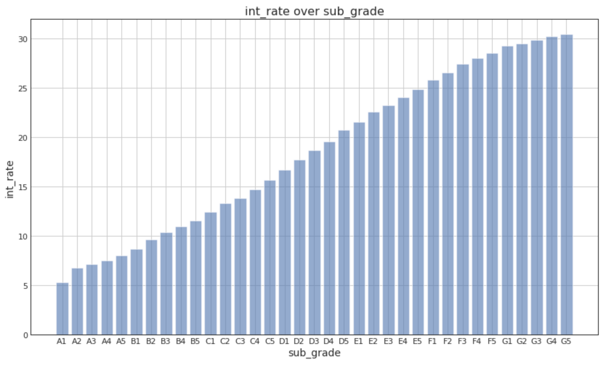
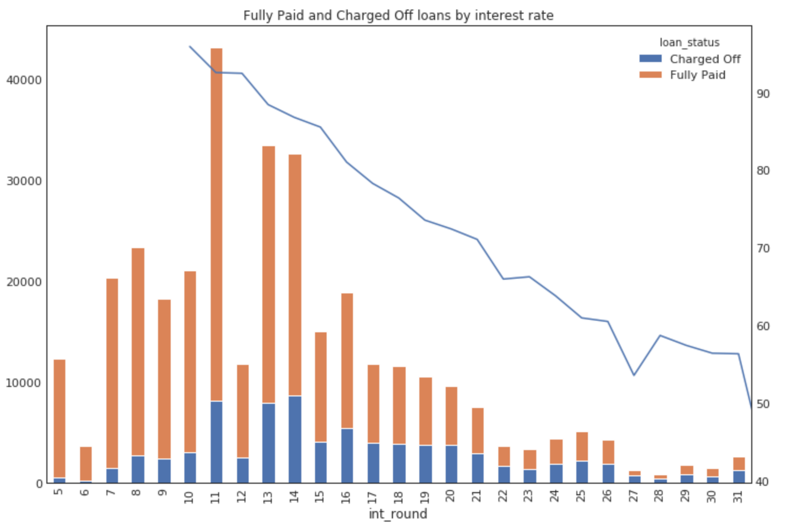
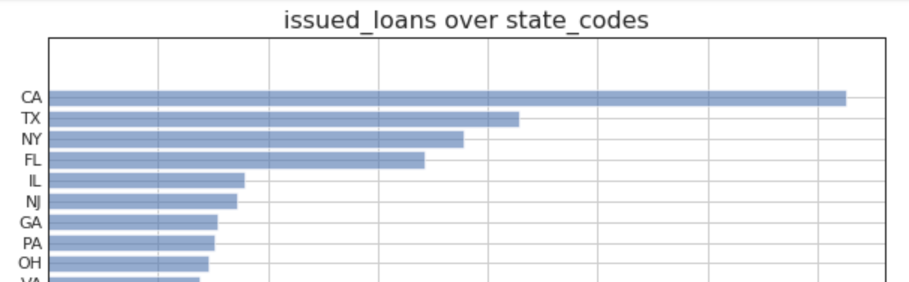
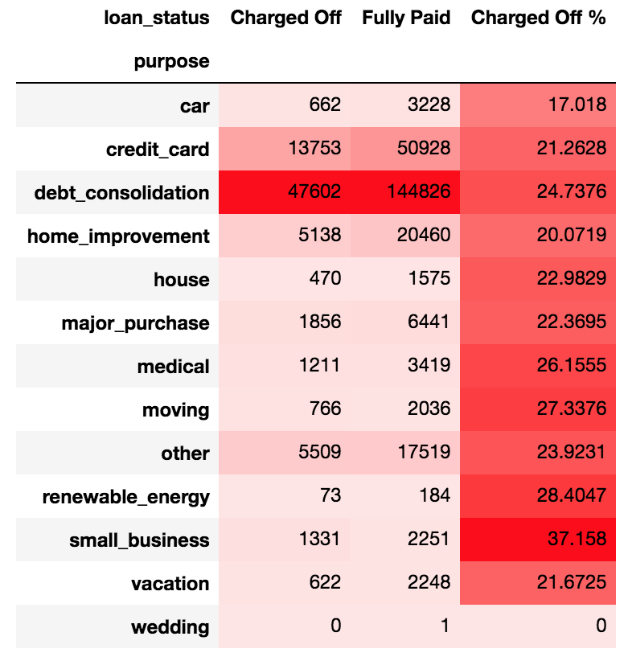

Lending Club Project
Group 14: Milestone 3
Project Background
LendingClub is a peer-to-peer lending network that launched in 2006. It provides a marketplace that allows potential borrowers to apply for loans. Investors can review these applications and decide how much they are willing to fund - either manually or through an automated strategy. To facilitate this evaluation, LendingClub provides data on the borrower that can be used to determine investment decisions.
The first part of the project is to build a model that can be used to inform an investment strategy, which could be used by a LendingClub investor. The research question we have proposed for this part is: Given a loan application, our model will predict whether the applicant will 'pay-off' or 'charge-off' the loan.
The second part of the project is to investigate potential issues of discrimination. LendingClub requires that its investors commit to not violating borrower discrimination laws. Thus, it is not permitted to use characteristics such as race, sex, religion etc when deciding whether or not to invest in loans. Although the information reported does not contain demographic information that would allow for direct consideration of these factors, there are other variables that could be used to infer an applicant’s social characteristics, such as their location (correlating with race) or years of employment (correlating with age). Our proposed approach to this second part of the project is based on a literature review and explained further below.
Description of the data and initial cleaning
LendingClub provides two datasets: Loan data (for all loans issued) and Declined loan data (loan applications that did not meet LendingClub’s credit underwriting policy.
The Loan data covers the period from 2007 to Q2 2018. It contains around 150 variables, details of which are provided in a data dictionary.
The Declined loan data covers the same period; however, it only contains nine predictors and refers to applications that do not make it onto the LendingClub platform. This data is therefore not considered relevant to the research question, since investors would not consider these applicants in their strategies.
We have elected to focus on the data for 2016 and 2017 for the purposes of training the model. This is because:
- The variables included in the datasets have changed over time, meaning that features in the more recent datasets are not necessarily available in the older datasets.
- Since the model will be used to inform an investment strategy going forwards, the most relevant data are from recent years.
The dataset is reasonably clean and we were able to gap-fill most of the missing data with sensible values and minimise dropping of rows. This suggests that there are no issues of potential biases due to dropping rows with missing data. In summary, the following data cleaning operations were carried out:
- Removal of columns to prevent data leakage, i.e. removing those that contained information that would only become available after the loan has been issued. Keeping such variables would lead to artificially good model predictions, and hence it is important to remove them. We contacted the Lending Club help desk in order to indicate which columns were updated monthly and which were available at the time of application. Only variables that are available at the time of the loan application were kept. Examples of removed columns include: recoveries, collection_recovery_fee, total_pymnt, columns starting with next_ or last_ etc.
- Removal of uninformative columns, e.g. those that contained no data or single values (e.g. id, member_id, url)
- Filling missing values, using sensible assumptions. For instance, missing data was typically filled with zeros unless this did not make sense (for instance, all of the mths_since... variables have many missing values. We cannot replace NaNs with 0's since this would suggest that there had been a recent occurrence. Therefore these are re-coded as binary variables with 0 indicating no occurrence and 1 indicating an occurrence).
- Recoding the data, for example, converting employment length to numeric, recoding binary variables as 0, 1.
The loan status, is the target predictor for our current research question. This includes 7 statuses: current, fully paid, charged off, late (31 - 120 days), late (16 - 30 days), in grace period and default. Due to the need to ensure that we compare on a like-for-like basis, we only consider loans that have completed their full life cycle (i.e. loan status of “fully paid” or “charged off”), since the status of current loans may change over time.
Summary of noteworthy findings from the EDA
As described above, we are focusing on the dataset from 2016 and 2017. That dataset has about 90 predictors and 334,000 observations. The ratio of “Fully paid” to “Charged off” loans in the original set is about 3:1 which makes it somewhat imbalanced. We will consider that by balancing the data for the modelling process.
For the purposes of EDA, however, we kept the original dataset. We ran a correlation analysis to see which predictors correlate and we also ran several modelling algorithms (LassoCV, Decision Tree and Random Forest) that would help us find the most significant predictors in the dataset. Below are some examples of the most important predictors that had a higher impact on the target variable loan status:
- Interest Rate
- Sub Grade (a rating that Lending Club assigned to the loan)
- Average Current Balance (of all accounts)
- FiCo score (the borrower’s credit score)
- Dti (the debt to income ratio)
- Installment (the monthly payment owed by the borrower if the loan originates)
- Employment length (in years)
- Term (36 or 60 months)
- Revolving line utilization rate (the amount of credit the borrower is using relative to all available revolving credit)
- Loan amount
- Annual income
- Home ownership
Loan Amount
When we look at the distribution of the loan amount, it shows a preference for requesting values in 5k steps, such as 5k, 10k, 15k, 20k, 35k etc. Most loans are relatively smaller amounts: 50% of all loans are below $ 12,500 and 75% below $ 20,000


Loan risk (i.e. grades/ratings and interest rates)
When looking at the loan risk (expressed as sub grades), the grades go from A1 (highest/best) to G5 (lowest/worst). We can see a trend that looks like smaller loan amounts are usually rated as a lower risk and larger loans are usually rated riskier, which makes sense.

As far as the default by grade goes, it seems that grades A and B are fairly “safe” because the majority of loans in these classes are paid off; however, anything lower than a D (i.e. riskier grade) has a risk of 63-77% of defaulting.

Interest rates are higher for lower sub grades, which also makes sense, since the interest rate reflects a measurement of risk and so does the sub grade.

This also seems to be confirmed when looking at the rate of defaulted loans by interest rate. The higher the interest rate, the more likely that a loan is going to default (see below).

Loans by States
We can also show that almost 40% of all loans were made in only the top four States: CA, TX, NY and FL.

When looking at the average annual incomes, three of these States (CA, NY and TX) are in the top 10, but FL is on rank 27. This leaves the question as to why there have been so many loans in FL?

Since 40% of all loans were made in the top four States, we would naturally expect those to have the highest absolute numbers of defaults too. However, we can also look at which States have a higher default rate than the national average of 23.64%. This shows that especially some States in the South like AR, LA, MS and AL are at the top of the list.

Loan Purpose
Another interesting aspect we looked at was the defaulted loans by loan purpose and/or by loan grade. We know that our "base charged off rate", meaning the % of all charged off loans over all loans made in 2016-2017 is 23.64%. This means all loan purposes that show a higher percentage in the table below, are probably at a higher risk than average to default. In this case that is dept_collection, medical, moving, renewable_energy, small_business and other.

Literature Review
AI Fairness 360: An Extensible Toolkit for Detecting, Understanding, and Mitigating Unwanted Algorithmic Bias
Citation: Sam Corbett-Davies, Emma Pierson, Avi Feller, Sharad Goel, Aziz Huq, June 10th 2017 https://arxiv.org/abs/1701.08230
What: Algorithms are regularly used to decide whether defendants awaiting trial are too dangerous to be released. In some cases, black defendants are substantially more likely than white defendants to be incorrectly classified as high risk. To mitigate such disparities, several techniques have recently been proposed to achieve algorithmic fairness.
How: In this paper the authors reformulate algorithmic fairness as constrained optimization: the objective is to maximize public safety while satisfying formal fairness constraints designed to reduce racial disparities.
Conclusion: By analyzing data from Broward County, the authors find that optimizing for public safety yields stark racial disparities; conversely, satisfying past fairness definitions means releasing more high-risk defendants, adversely affecting public safety. And algorithms have the potential to improve the efficiency and equity of decisions, but their design and application raise complex questions for researchers and policymakers.